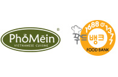
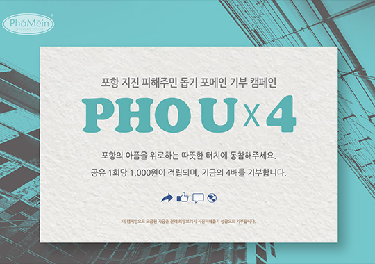
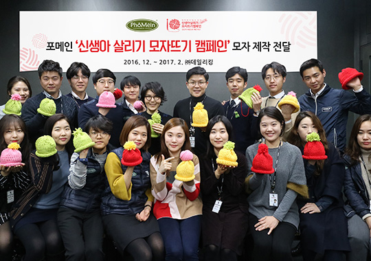

PHOMEIN CSR
With undying sincerity, PHOMEIN brings warmth to your today, to your world.

Under the strong resolution of "The exemplary company with trusts",
Based on the firm ethical management,
Phomein is supporting aids to underprivilleged groups
and to children in developing countries.
Introduction of activities

 Phomein donated 4,536 boxes of newly-harvested rice noodles. Before showing the newly-harvested rice noodles that have been successfully developed by using only newly-harvested rice, the head office of Phomein donated 4,536 boxes of rice noodles worth 180 million won for the underprivileged of welfare.

 'PHO EVER 2018' Job Experience Mentoring
Together with Global Vision, Phomein conducted the job experience mentoring, 'PHO EVER 2018' to learn/practice the job that could be experienced in Phomein, targeting the adolescents in need of employment support.
'PHO EVER 2018' Job Experience Mentoring
Together with Global Vision, Phomein conducted the job experience mentoring, 'PHO EVER 2018' to learn/practice the job that could be experienced in Phomein, targeting the adolescents in need of employment support.

 Donation for 'Helping the Pohang Earthquake Victims'
'PHO x 4', a donation campaign to help the Pohang earthquake victims, was conducted in the Official Facebook Page of Phomein, so the quadruple of collected fund was donated to
Donation for 'Helping the Pohang Earthquake Victims'
'PHO x 4', a donation campaign to help the Pohang earthquake victims, was conducted in the Official Facebook Page of Phomein, so the quadruple of collected fund was donated to

 'Participated in Save the Children's hat-knitting campaign 'Knit One Save One'
The staff at Phomein's head office and all franchisees knitted over 200 hats. Which were donated to Save the Children for underweight or malnourished newborn babies.
'Participated in Save the Children's hat-knitting campaign 'Knit One Save One'
The staff at Phomein's head office and all franchisees knitted over 200 hats. Which were donated to Save the Children for underweight or malnourished newborn babies.

 'Happy Gift Box' delivered to Seongnam Regional Children's Center
'Happy Gift Box' delivered to Seongnam Regional Children's Center Our head office executives and employees packaged Happy Gift Boxes and delivered them to three Regional Children's Centers in Seongnam, and shared warm meals with children by preparing Phomein's summer roll together.
'Happy Gift Box' delivered to Seongnam Regional Children's Center
'Happy Gift Box' delivered to Seongnam Regional Children's Center Our head office executives and employees packaged Happy Gift Boxes and delivered them to three Regional Children's Centers in Seongnam, and shared warm meals with children by preparing Phomein's summer roll together.

 Habitat 'Hopeful House Building' Architecture Volunteering
The Phomein staff members conducted a Habitat program to build houses and present them to non-homeowners with low-income so that they have a warm place to live
Habitat 'Hopeful House Building' Architecture Volunteering
The Phomein staff members conducted a Habitat program to build houses and present them to non-homeowners with low-income so that they have a warm place to live

 Habitat 'Hopeful House Building' Fund sponsorship
The Phomein staff members delivered funds to Habitat to be well meant in local communities and be of a help to low-income, non-homeowners.
Habitat 'Hopeful House Building' Fund sponsorship
The Phomein staff members delivered funds to Habitat to be well meant in local communities and be of a help to low-income, non-homeowners.

 Sharing Love with Briquettes' Volunteering
All of Phomein staff members participated in 'Sharing Love with Briquettes' campaign and donated 5,000 briquettes to LOVECOAL corporation's briquette delivering campaign, and we've visited to underprivileged families' homes in Geumto-dong, Seongnam-si, Gyeonggi-do and delivered 1,500 briquettes.
Sharing Love with Briquettes' Volunteering
All of Phomein staff members participated in 'Sharing Love with Briquettes' campaign and donated 5,000 briquettes to LOVECOAL corporation's briquette delivering campaign, and we've visited to underprivileged families' homes in Geumto-dong, Seongnam-si, Gyeonggi-do and delivered 1,500 briquettes.

 Deliverance of fund for the world children's aid
Phomein was the first in the field to have an agreement with UNICEF about fund donation. And with UNICEF, we held a meaningful event where our company delivered donation funds to world children's aid, in hopes to present children in poverty a beacon of light.
Deliverance of fund for the world children's aid
Phomein was the first in the field to have an agreement with UNICEF about fund donation. And with UNICEF, we held a meaningful event where our company delivered donation funds to world children's aid, in hopes to present children in poverty a beacon of light.